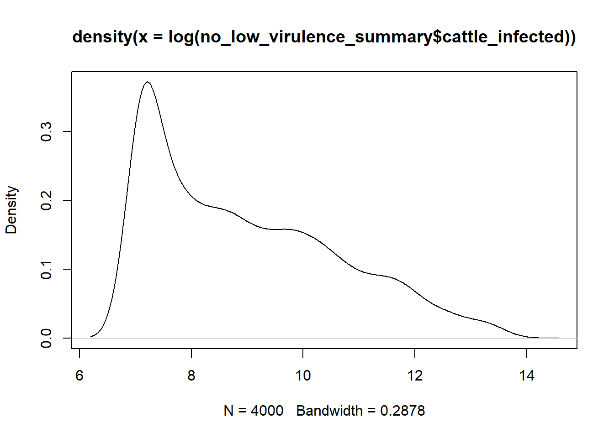
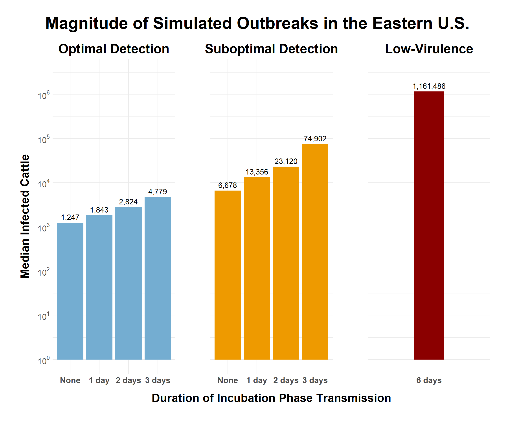

Outbreak Magnitude
Summarize the number of farms and total cattle infected in simulated outbreaks
Infection Summary
The summarize_infections function generates a data frame summarizing infection events by iteration. The generate_infect_statistics generates a data frame of summary statistics grouped by preclinical infectious duration and response type.
Hide code
## Summarize infection metrics for each iteration
infect_summary <- summarize_infections(infection)
head(infect_summary, 3)| response | preclinical_days | iteration | farms_infected | cattle_infected | first_infect_day | last_infect_day |
|---|---|---|---|---|---|---|
| suboptimal | 0 | 1 | 27 | 13404 | 10 | 48 |
| suboptimal | 0 | 2 | 27 | 6313 | 10 | 43 |
| suboptimal | 0 | 3 | 15 | 6634 | 10 | 49 |
Hide code
## Generate summary statistics
infect_config_summary <- generate_infect_statistics(infect_summary)
dim(infect_config_summary)[1] 36 11Summarize Farms
Hide code
farms_inf_summary <- infect_config_summary %>%
filter(summary == "farms_infected")
farms_inf_summary| summary | response | preclinical_days | iterations | mean | sd | q05 | q25 | q50 | q75 | q95 |
|---|---|---|---|---|---|---|---|---|---|---|
| farms_infected | suboptimal | 0 | 500 | 41.674 | 58.111803 | 4.00 | 10.00 | 21.0 | 51.00 | 134.05 |
| farms_infected | suboptimal | 1 | 500 | 89.450 | 132.375095 | 5.00 | 16.00 | 41.0 | 94.75 | 330.70 |
| farms_infected | suboptimal | 2 | 500 | 186.164 | 260.295764 | 6.00 | 26.00 | 74.0 | 268.25 | 684.10 |
| farms_infected | suboptimal | 3 | 500 | 457.092 | 534.114914 | 9.00 | 43.00 | 250.5 | 655.50 | 1620.15 |
| farms_infected | optimal | 0 | 500 | 6.564 | 9.493058 | 2.00 | 2.00 | 4.0 | 7.00 | 20.05 |
| farms_infected | optimal | 1 | 500 | 13.590 | 22.554985 | 2.00 | 3.00 | 6.0 | 13.00 | 57.05 |
| farms_infected | optimal | 2 | 500 | 30.400 | 65.448629 | 2.00 | 5.00 | 10.0 | 26.00 | 124.05 |
| farms_infected | optimal | 3 | 500 | 54.782 | 88.785179 | 2.00 | 7.00 | 15.0 | 61.25 | 237.10 |
| farms_infected | low-virulence | 6 | 500 | 3101.590 | 1465.846151 | 61.85 | 2435.75 | 3412.5 | 4187.25 | 4993.10 |
Summarize Cattle
Hide code
cattle_inf_summary <- infect_config_summary %>%
filter(summary == "cattle_infected")
cattle_inf_summary| summary | response | preclinical_days | iterations | mean | sd | q05 | q25 | q50 | q75 | q95 |
|---|---|---|---|---|---|---|---|---|---|---|
| cattle_infected | suboptimal | 0 | 500 | 16142.812 | 25425.965 | 1267.80 | 2524.25 | 6678.5 | 18888.50 | 57099.95 |
| cattle_infected | suboptimal | 1 | 500 | 31848.112 | 51456.903 | 1453.00 | 4203.00 | 13355.5 | 33844.50 | 126665.70 |
| cattle_infected | suboptimal | 2 | 500 | 62893.166 | 97353.900 | 1606.45 | 6739.00 | 23120.0 | 83048.75 | 253791.15 |
| cattle_infected | suboptimal | 3 | 500 | 153263.466 | 192759.277 | 1933.45 | 13765.75 | 74901.5 | 215762.00 | 601651.45 |
| cattle_infected | optimal | 0 | 500 | 2686.652 | 4157.196 | 1164.00 | 1164.00 | 1247.0 | 2236.25 | 8903.30 |
| cattle_infected | optimal | 1 | 500 | 5315.418 | 9521.187 | 1164.00 | 1208.75 | 1843.0 | 4832.50 | 21955.40 |
| cattle_infected | optimal | 2 | 500 | 11114.532 | 27786.861 | 1164.00 | 1355.50 | 2824.0 | 8958.25 | 47171.35 |
| cattle_infected | optimal | 3 | 500 | 17873.322 | 29748.032 | 1164.00 | 1766.75 | 4779.0 | 21289.75 | 79301.35 |
| cattle_infected | low-virulence | 6 | 500 | 1019390.812 | 485089.246 | 14089.10 | 799123.25 | 1161486.0 | 1366618.00 | 1600987.95 |
Significance Test
Significance testing performed on optimal and suboptimal detection scenarios
Hide code
## Filter out low virulence scenarios
no_low_virulence <- infection %>%
filter(response != "low-virulence")
no_low_virulence_summary <- summarize_infections(no_low_virulence)
range(no_low_virulence_summary$cattle_infected) # high values[1] 1164 893163Hide code
plot(density(no_low_virulence_summary$cattle_infected)) #long tail
Hide code
## Log scale to normalize data
range(log(no_low_virulence_summary$cattle_infected))[1] 7.059618 13.702524Hide code
plot(density(log(no_low_virulence_summary$cattle_infected)))
Linear Model
Hide code
model_inf_cattle <- lm(log(cattle_infected) ~ preclinical_days * response,
data = no_low_virulence_summary)
summary(model_inf_cattle)
Call:
lm(formula = log(cattle_infected) ~ preclinical_days * response,
data = no_low_virulence_summary)
Residuals:
Min 1Q Median 3Q Max
-3.7779 -0.8537 -0.2152 0.9186 4.4417
Coefficients:
Estimate Std. Error t value Pr(>|t|)
(Intercept) 7.50987 0.05923 126.797 < 2e-16 ***
preclinical_days1 0.40348 0.08376 4.817 1.51e-06 ***
preclinical_days2 0.80329 0.08376 9.590 < 2e-16 ***
preclinical_days3 1.26127 0.08376 15.058 < 2e-16 ***
responsesuboptimal 1.40233 0.08376 16.742 < 2e-16 ***
preclinical_days1:responsesuboptimal 0.14443 0.11846 1.219 0.22280
preclinical_days2:responsesuboptimal 0.30751 0.11846 2.596 0.00947 **
preclinical_days3:responsesuboptimal 0.66405 0.11846 5.606 2.21e-08 ***
---
Signif. codes: 0 '***' 0.001 '**' 0.01 '*' 0.05 '.' 0.1 ' ' 1
Residual standard error: 1.324 on 3992 degrees of freedom
Multiple R-squared: 0.3794, Adjusted R-squared: 0.3783
F-statistic: 348.6 on 7 and 3992 DF, p-value: < 2.2e-16Analysis of Variance (ANOVA)
Hide code
anova(model_inf_cattle)| Df | Sum Sq | Mean Sq | F value | Pr(>F) | |
|---|---|---|---|---|---|
| preclinical_days | 3 | 1391.58709 | 463.862363 | 264.46615 | 0e+00 |
| response | 1 | 2826.86883 | 2826.868825 | 1611.70891 | 0e+00 |
| preclinical_days:response | 3 | 61.25672 | 20.418906 | 11.64162 | 1e-07 |
| Residuals | 3992 | 7001.79806 | 1.753957 | NA | NA |
Plot Cattle Numbers
Prepare to plot the median number of infected cattle by scenario
Hide code
cattle_inf_summary$response <- ordered(factor(cattle_inf_summary$response), c("optimal", "suboptimal", "low-virulence"))
## Assign response colors
response_colors <- c("#74add1", "orange2", "red4") Generate Plot Using Patchwork Package
The plot_infected_cattle function plots infected cattle by scenario, with the duration of incubation phase transmission on the x-axis and the median number of infected cattle on the y-axis.
Hide code
infect_cattle_plot <- plot_infected_cattle(cattle_inf_summary, regional_scenario)Hide code
infect_cattle_plot